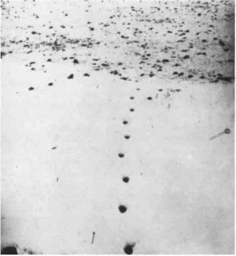

That day, the Wolf-Man rose from the couch particularly tired. He knew that Freud had a genius for brushing up against the truth and passing it by, then filling the void with associations. He knew that Freud knew nothing about wolves, or anuses for that matter. The only thing Freud understood was what a dog is, and a dog’s tail. It wasn’t enough. It wouldn’t be enough. The Wolf-Man knew that Freud would soon declare him cured, but that it was not at all the case and his treatment would continue for all eternity under Brunswick, Lacan, Leclaire. Finally, he knew that he was in the process of acquiring a veritable proper name, the Wolf-Man, a name more properly his than his own, since it attained the highest degree of singularity in the instantaneous apprehension of a generic multiplicity: wolves. He knew that this new and true proper name would be disfigured and misspelled, retranscribed as a patronymic.
Freud, for his part, would go on to write some extraordinary pages. Entirely practical pages: his article of 1915 on “The Unconscious,” which deals with the difference between neurosis and psychosis. Freud says that hysterics or obsessives are people capable of making a global comparison between a sock and a vagina, a scar and castration, etc. Doubtless, it is at one and the same time that they apprehend the object globally and perceive it as lost. Yet it would never occur to a neurotic to grasp the skin erotically as a multiplicity of pores, little spots, little scars or black holes, or to grasp the sock erotically as a multiplicity of stitches. The psychotic can: “we should expect the multiplicity of these little cavities to prevent him from using them as substitutes for the female genital.”1 Comparing a sock to a vagina is OK, it’s done all the time, but you’d have to be insane to compare a pure aggregate of stitches to a field of vaginas: that’s what Freud says. This represents an important clinical discovery: a whole difference in style between neurosis and psychosis. For example, Salvador Dali, in attempting to reproduce his delusions, may go on at length about THE rhinoceros horn; he has not for all of that left neurotic discourse behind. But when he starts comparing goosebumps to a field of tiny rhinoceros horns, we get the feeling that the atmosphere has changed and that we are now in the presence of madness. Is it still a question of a comparison at all? It is, rather, a pure multiplicity that changes elements, or becomes. On the micrological level, the little bumps “become” horns, and the horns, little penises.
No sooner does Freud discover the greatest art of the unconscious, this art of molecular multiplicities, than we find him tirelessly at work bringing back molar unities, reverting to his familiar themes of the father, the penis, the vagina, Castration with a capital C… (On the verge of discovering a rhizome, Freud always returns to mere roots.) The reductive procedure of the 1915 article is quite interesting: he says that the comparisons and identifications of the neurotic are guided by representations of things, whereas all the psychotic has left are representations of words (for example, the word “hole”). “What has dictated the substitution is not the resemblance between the things denoted but the sameness of the words used to express them” (p. 201). Thus, when there is no unity in the thing, there is at least unity and identity in the word. It will be noted that names are taken in their extensive usage, in other words, function as common nouns ensuring the unification of an aggregate they subsume. The proper name can be nothing more than an extreme case of the common noun, containing its already domesticated multiplicity within itself and linking it to a being or object posited as unique. This jeopardizes, on the side of words and things both, the relation of the proper name as an intensity to the multiplicity it instantaneously apprehends. For Freud, when the thing splinters and loses its identity, the word is still there to restore that identity or invent a new one. Freud counted on the word to reestablish a unity no longer found in things. Are we not witnessing the first stirrings of a subsequent adventure, that of the Signifier, the devious despotic agency that substitutes itself for asignifying proper names and replaces multiplicities with the dismal unity of an object declared lost?
We’re not far from wolves. For the Wolf-Man, in his second so-called psychotic episode, kept constant watch over the variations or changing path of the little holes or scars on the skin of his nose. During the first episode, which Freud declares neurotic, he recounted a dream he had about six or seven wolves in a tree, and drew five. Who is ignorant of the fact that wolves travel in packs? Only Freud. Every child knows it. Not Freud. With false scruples he asks, How are we to explain the fact that there are five, six, or seven wolves in this dream? He has decided that this is neurosis, so he uses the other reductive procedure: free association on the level of the representation of things, rather than verbal subsumption on the level of the representation of words. The result is the same, since it is always a question of bringing back the unity or identity of the person or allegedly lost object. The wolves will have to be purged of their multiplicity. This operation is accomplished by associating the dream with the tale, “The Wolf and the Seven Kid-Goats” (only six of which get eaten). We witness Freud’s reductive glee; we literally see multiplicity leave the wolves to take the shape of goats that have absolutely nothing to do with the story. Seven wolves that are only kid-goats. Six wolves: the seventh goat (the Wolf-Man himself) is hiding in the clock. Five wolves: he may have seen his parents make love at five o’clock, and the roman numeral V is associated with the erotic spreading of a woman’s legs. Three wolves: the parents may have made love three times. Two wolves: the first coupling the child may have seen was the two parents more ferarum, or perhaps even two dogs. One wolf: the wolf is the father, as we all knew from the start. Zero wolves: he lost his tail, he is not just a castrater but also castrated. Who is Freud trying to fool? The wolves never had a chance to get away and save their pack: it was already decided from the very beginning that animals could serve only to represent coitus between parents, or, conversely, be represented by coitus between parents. Freud obviously knows nothing about the fascination exerted by wolves and the meaning of their silent call, the call to become-wolf. Wolves watch, intently watch, the dreaming child; it is so much more reassuring to tell oneself that the dream produced a reversal and that it is really the child who sees dogs or parents in the act of making love. Freud only knows the Oedipalized wolf or dog, the castrated-castrating daddy-wolf, the dog in the kennel, the analyst’s bow-wow.
Franny is listening to a program on wolves. I say to her, Would you like to be a wolf? She answers haughtily, How stupid, you can’t be one wolf, you’re always eight or nine, six or seven. Not six or seven wolves all by yourself all at once, but one wolf among others, with five or six others. In becoming-wolf, the important thing is the position of the mass, and above all the position of the subject itself in relation to the pack or wolf-multiplicity: how the subject joins or does not join the pack, how far away it stays, how it does or does not hold to the multiplicity. To soften the harshness of her response, Franny recounts a dream: “There is a desert. Again, it wouldn’t make any sense to say that I am in the desert. It’s a panoramic vision of the desert, and it’s not a tragic or uninhabited desert. It’s only a desert because of its ocher color and its blazing, shadowless sun. There is a teeming crowd in it, a swarm of bees, a rumble of soccer players, oragroup of Tuareg. lam on the edge of the crowd, at the periphery; but I belong to it, I am attached to it by one of my extremities, a hand or foot. I know that the periphery is the only place I can be, that I would die if I let myself be drawn into the center of the fray, but just as certainly if I let go of the crowd. This is not an easy position to stay in, it is even very difficult to hold, for these beings are in constant motion and their movements are unpredictable and follow no rhythm. They swirl, go north, then suddenly east; none of the individuals in the crowd remains in the same place in relation to the others. So I too am in perpetual motion; all this demands a high level of tension, but it gives me a feeling of violent, almost vertiginous, happiness.” A very good schizo dream. To be fully a part of the crowd and at the same time completely outside it, removed from it: to be on the edge, to take a walk like Virginia Woolf (never again will I say, “I am this, I am thai”).1
Problems of peopling in the unconscious: all that passes through the pores of the schizo, the veins of the drug addict, swarming, teeming, ferment, intensities, races and tribes. This tale of white skin prickling with bumps and pustules, and of dwarfish black heads emerging from pores grimacing and abominable, needing to be shaved off every morning — is it a tale by Jean Ray, who knew how to bring terror to phenomena of micromultiplicity? And how about the “Lilliputian hallucinations” on ether? One schizo, two schizos, three: “There are babies growing in my every pore” — “With me, it’s not in the pores, it’s in my veins, little iron rods growing in my veins” — “I don’t want them to give me any shots, except with camphorated alcohol. Otherwise breasts grow in my every pore.” Freud tried to approach crowd phenomena from the point of view of the unconscious, but he did not see clearly, he did not see that the unconscious itself was fundamentally a crowd. He was myopic and hard of hearing; he mistook crowds for a single person. Schizos, on the other hand, have sharp eyes and ears. They don’t mistake the buzz and shove of the crowd for daddy’s voice. Once Jung had a dream about bones and skulls. A bone or a skull is never alone. Bones are a multiplicity. But Freud wants the dream to signify the death of someone. “Jung was surprised and pointed out that there were several skulls, not just one. Yet Freud still…”3
A multiplicity of pores, or blackheads, of little scars or stitches. Breasts, babies, and rods. A multiplicity of bees, soccer players, or Tuareg. A multiplicity of wolves or jackals … All of these things are irreducible but bring us to a certain status of the formations of the unconscious. Let us try to define the factors involved: first, something plays the role of the full body — the body without organs. In the preceding dream it was the desert. In the Wolf-Man’s dream it is the denuded tree upon which the wolves are perched. It is also the skin as envelope or ring, and the sock as reversible surface. It can be a house or part of a house, any number of things, anything. Whenever someone makes love, really makes love, that person constitutes a body without organs, alone and with the other person or people. A body without organs is not an empty body stripped of organs, but a body upon which that which serves as organs (wolves, wolf eyes, wolf jaws?) is distributed according to crowd phenomena, in Brownian motion, in the form of molecular multiplicities. The desert is populous. Thus the body without organs is opposed less to organs as such than to the organization of the organs insofar as it composes an organism. The body without organs is not a dead body but a living body all the more alive and teeming once it has blown apart the organism and its organization. Lice hopping on the beach. Skin colonies. The full body without organs is a body populated by multiplicities. The problem of the unconscious has most certainly nothing to do with generation but rather peopling, population. It is an affair of worldwide population on the full body of the earth, not organic familial generation. “I love to invent peoples, tribes, racial origins … I return from my tribes. As of today, I am the adoptive son of fifteen tribes, no more, no less. And they in turn are my adopted tribes, for I love each of them more than if I had been born into it.” People say, After all, schizophrenics have a mother and a father, don’t they? Sorry, no, none as such. They only have a desert with tribes inhabiting it, a full body clinging with multiplicities.
This brings us to the second factor, the nature of these multiplicities and their elements. RHIZOME. One of the essential characteristics of the dream of multiplicity is that each element ceaselessly varies and alters its distance in relation to the others. On the Wolf-Man’s nose, the elements, determined as pores in the skin, little scars in the pores, little ruts in the scar tissue, ceaselessly dance, grow, and diminish. These variable distances are not extensive quantities divisible by each other; rather, each is indivisible, or “relatively indivisible,” in other words, they are not divisible below or above a certain threshold, they cannot increase or diminish without their elements changing in nature. A swarm of bees: here they come as a rumble of soccer players in striped jerseys, or a band of Tuareg. Or: the wolf clan doubles up with a swarm of bees against the gang of Deulhs, under the direction of Mowgli, who runs on the edge (yes, Kipling understood the call of the wolves, their libidinal meaning, better than Freud; and in the Wolf-Man’s case the story about wolves is followed by one about wasps and butterflies, we go from wolves to wasps). What is the significance of these indivisible distances that are ceaselessly transformed, and cannot be divided or transformed without their elements changing in nature each time? Is it not the intensive character of this kind of multiplicity’s elements and the relations between them? Exactly like a speed or a temperature, which is not composed of other speeds and temperatures but rather is enveloped in or envelops others, each of which marks a change in nature. The metrical principle of these multiplicities is not to be found in a homogeneous milieu but resides elsewhere, in forces at work within them, in physical phenomena inhabiting them, precisely in the libido, which constitutes them from within, and in constituting them necessarily divides into distinct qualitative and variable flows. Freud himself recognizes the multiplicity of libidinal “currents” that coexist in the Wolf-Man. That makes it all the more surprising that he treats the multiplicities of the unconscious the way he does. For him, there will always be a reduction to the One: the little scars, the little holes, become subdivisions of the great scar or supreme hole named castration; the wolves become substitutes for a single Father who turns up everywhere, or wherever they put him. (As Ruth Mack Brunswick says, Let’s go all the way, the wolves are “all the fathers and doctors” in the world; but the Wolf-Man thinks, “You trying to tell me my ass isn’t a wolf?”)
What should have been done is the opposite, all of this should be understood in intensity: the Wolf is the pack, in other words, the multiplicity instantaneously apprehended as such insofar as it approaches or moves away from zero, each distance being nondecomposable. Zero is the body without organs of the Wolf-Man. If the unconscious knows nothing of negation, it is because there is nothing negative in the unconscious, only indefinite moves toward and away from zero, which does not at all express lack but rather the positivity of the full body as support and prop (“for an afflux is necessary simply to signify the absence of intensity”). The wolves designate an intensity, a band of intensity, a threshold of intensity on the Wolf-Man’s body without organs. A dentist told the Wolf-Man that he “would soon lose all his teeth because of the violence of his bite” — and that his gums were pocked with pustules and little holes.4 Jaw as high intensity, teeth as low intensity, and pustular gums as approach to zero. The wolf, as the instantaneous apprehension of a multiplicity in a given region, is not a representative, a substitute, but an I feel. I feel myself becoming a wolf, one wolf among others, on the edge of the pack. A cry of anguish, the only one Freud hears: Help me not become wolf (or the opposite, Help me not fail in this becoming). It is not a question of representation: don’t think for a minute that it has to do with believing oneself a wolf, representing oneself as a wolf. The wolf, wolves, are intensities, speeds, temperatures, nondecom-posable variable distances. A swarming, a wolfing. Who could ever believe that the anal machine bears no relation to the wolf machine, or that the two are only linked by an Oedipal apparatus, by the all-too-human figure of the Father? For in the end the anus also expresses an intensity, in this case the approach to zero of a distance that cannot be decomposed without its elements changing in nature. Afield of anuses, just like a pack of wolves. Does not the child, on the periphery, hold onto the wolves by his anus? The jaw descends to the anus. Hold onto those wolves by your jaw and your anus. The jaw is not a wolf jaw, it’s not that simple; jaw and wolf form a multiplicity that is transformed into eye and wolf, anus and wolf, as a function of other distances, at other speeds, with other multiplicities, between thresholds. Lines of flight or of deterritorialization, becoming-wolf, becoming-inhuman, deterritorialized intensities: that is what multiplicity is. To become wolf or to become hole is to deterritorialize oneself following distinct but entangled lines. A hole is no more negative than a wolf. Castration, lack, substitution: a tale told by an overconscious idiot who has no understanding of multiplicities as formations of the unconscious. A wolf is a hole, they are both particles of the unconscious, nothing but particles, productions of particles, particulate paths, as elements of molecular multiplicities. It is not even sufficient to say that intense and moving particles pass through holes; a hole is just as much a particle as what passes through it. Physicists say that holes are not the absence of particles but particles traveling faster than the speed of light. Flying anuses, speeding vaginas, there is no castration.
Let us return to the story of multiplicity, for the creation of this substantive marks a very important moment. It was created precisely in order to escape the abstract opposition between the multiple and the one, to escape dialectics, to succeed in conceiving the multiple in the pure state, to cease treating it as a numerical fragment of a lost Unity or Totality or as the organic element of a Unity or Totality yet to come, and instead distinguish between different types of multiplicity. Thus we find in the work of the mathematician and physicist Riemann a distinction between discreet multiplicities and continuous multiplicities (the metrical principle of the second kind of multiplicity resides solely in forces at work within them). Then in Meinong and Russell we find a distinction between multiplicities of magnitude or divisibility, which are extensive, and multiplicities of distance, which are closer to the intensive. And in Bergson there is a distinction between numerical or extended multiplicities and qualitative or durational multiplicities. We are doing approximately the same thing when we distinguish between arborescent multiplicities and rhizomatic multiplicities. Between macroand micromultiplicities. On the one hand, multiplicities that are extensive, divisible, and molar; unifiable, total-izable, organizable; conscious or preconscious — and on the other hand, libidinal, unconscious, molecular, intensive multiplicities composed of particles that do not divide without changing in nature, and distances that do not vary without entering another multiplicity and that constantly construct and dismantle themselves in the course of their communications, as they cross over into each other at, beyond, or before a certain threshold. The elements of this second kind of multiplicity are particles; their relations are distances; their movements are Brownian; their quantities are intensities, differences in intensity.
This only provides the logical foundation. Elias Canetti distinguishes between two types of multiplicity that are sometimes opposed but at other times interpenetrate: mass (“crowd”) multiplicities and pack multiplicities. Among the characteristics of a mass, in Canetti’s sense, we should note large quantity, divisibility and equality of the members, concentration, sociability of the aggregate as a whole, one-way hierarchy, organization of territoriality or territorialization, and emission of signs. Among the characteristics of a pack are small or restricted numbers, dispersion, nonde-composable variable distances, qualitative metamorphoses, inequalities as remainders or crossings, impossibility of a fixed totalization or hierar-chization, a Brownian variability in directions, lines of deterritorial-ization, and projection of particles.5 Doubtless, there is no more equality or any less hierarchy in packs than in masses, but they are of a different kind. The leader of the pack or the band plays move by move, must wager everything every hand, whereas the group or mass leader consolidates or capitalizes on past gains. The pack, even on its own turf, is constituted by a line of flight or of deterritorialization that is a component part of it, and to which it accredits a high positive value, whereas masses only integrate these lines in order to segment them, obstruct them, ascribe them a negative sign. Canetti notes that in a pack each member is alone even in the company of others (for example, wolves on the hunt); each takes care of himself at the same time as participating in the band. “In the changing constellation of the pack, in its dances and expeditions, he will again and again find himself at its edge. He may be in the center, and then, immediately afterwards, at the edge again; at the edge and then back in the center. When the pack forms a ring around the fire, each man will have neighbors to the right and left, but no one behind him; his back is naked and exposed to the wilderness.”6 We recognize this as the schizo position, being on the periphery, holding on by a hand or a foot… As opposed to the paranoid position of the mass subject, with all the identifications of the individual with the group, the group with the leader, and the leader with the group; be securely embedded in the mass, get close to the center, never be at the edge except in the line of duty. Why assume (as does Konrad Lorenz, for example) that bands and their type of companionship represent a more rudimentary evolutionary state than group societies or societies of conjugality? Not only do there exist bands of humans, but there are particularly refined examples: “high-society life” differs from “sociality” in that it is closer to the pack. Social persons have a certain envious and erroneous image of the high-society person because they are ignorant of high-society positions and hierarchies, the relations of force, the very particular ambitions and projects. High-society relations are never coextensive with social relations, they do not coincide. Even “mannerisms” (all bands have them) are specific to micromultiplicities and distinct from social manners or customs.
There is no question, however, of establishing a dualist opposition between the two types of multiplicities, molecular machines and molar machines’, that would be no better than the dualism between the One and the multiple. There are only multiplicities of multiplicities forming a single assemblage, operating in the same assemblage: packs in masses and masses in packs. Trees have rhizome lines, and the rhizome points of arbor-escence. How could mad particles be produced with anything but a gigantic cyclotron? How could lines of deterritorialization be assignable outside of circuits of territoriality? Where else but in wide expanses, and in major upheavals in those expanses, could a tiny rivulet of new intensity suddenly start to flow? What do you not have to do in order to produce a new sound? Becoming-animal, becoming-molecular, becoming-inhuman, each involves a molar extension, a human hyperconcentration, or prepares the way for them. In Kafka, it is impossible to separate the erection of a great paranoid bureaucratic machine from the installation of little schizo machines of becoming-dog or becoming-beetle. In the case of the Wolf-Man, it is impossible to separate the becoming-wolf of his dream from the military and religious organization of his obsessions. A military man does a wolf; a military man does a dog. There are not two multiplicities or two machines; one and the same machinic assemblage produces and distributes the whole, in other words, the set of statements corresponding to the “complex.” What does psychoanalysis have to say about all of this? Oedipus, nothing but Oedipus, because it hears nothing and listens to nobody. It flattens everything, masses and packs, molecular and molar machines, multiplicities of every variety. Take the Wolf-Man’s second dream during his so-called psychotic episode: in the street, a wall with a closed door, to the left an empty dresser; in front of the dresser, the patient, and a big woman with a little scar who seems to want to skirt around the wall; behind the wall, wolves, rushing for the door. Even Brunswick can’t go wrong: although she recognizes herself in the big woman, she does see that this time the wolves are Bolsheviks, the revolutionary mass that had emptied the dresser and confiscated the Wolf-Man’s fortune. The wolves, in a metastable state, have gone over to a large-scale social machine But psychoanalysis has nothing to say about all of these points — except what Freud already said: it all leads back to daddy (what do you know, he was one of the leaders of the liberal party in Russia, but that’s hardly important; all that needs to be said is that the revolution “assuaged the patient’s feelings of guilt”). You’d think that the investments and counterinvestments of the libido had nothing to do with mass disturbances, pack movements, collective signs, and particles of desire.
Thus it does not suffice to attribute molar multiplicities and mass machines to the preconscious, reserving another kind of machine or multiplicity for the unconscious. For it is the assemblage of both of these that is the province of the unconscious, the way in which the former condition the latter, and the latter prepare the way for the former, or elude them or return to them: the libido suffuses everything. Keep everything in sight at the same time — that a social machine or an organized mass has a molecular unconscious that marks not only its tendency to decompose but also the current components of its very operation and organization; that any individual caught up in a mass has his/her own pack unconscious, which does not necessarily resemble the packs of the mass to which that individual belongs; that an individual or mass will live out in its unconscious the masses and packs of another mass or another individual. What does it mean to love somebody? It is always to seize that person in a mass, extract him or her from a group, however small, in which he or she participates, whether it be through the family only or through something else; then to find that person’s own packs, the multiplicities he or she encloses within himself or herself which may be of an entirely different nature. To join them to mine, to make them penetrate mine, and for me to penetrate the other person’s. Heavenly nuptials, multiplicities of multiplicities. Every love is an exercise in depersonalization on a body without organs yet to be formed, and it is at the highest point of this depersonalization that someone can be named, receives his or her family name or first name, acquires the most intense discernibility in the instantaneous apprehension of the multiplicities belonging to him or her, and to which he or she belongs. A pack of freckles on a face, a pack of boys speaking through the voice of a woman, a clutch of girls in Charlus’s voice, a horde of wolves in somebody’s throat, a multiplicity of anuses in the anus, mouth, or eye one is intent upon. We each go through so many bodies in each other. Albertine is slowly extracted from a group of girls with its own number, organization, code, and hierarchy; and not only is this group or restricted mass suffused by an unconscious, but Albertine has her own multiplicities that the narrator, once he has isolated her, discovers on her body and in her lies — until the end of their love returns her to the indiscernible.
Above all, it should not be thought that it suffices to distinguish the masses and exterior groups someone belongs to or participates in from the internal aggregates that person envelops in himself or herself. The distinction to be made is not at all between exterior and interior, which are always relative, changing, and reversible, but between different types of multiplicities that coexist, interpenetrate, and change places — machines, cogs, motors, and elements that are set in motion at a given moment, forming an assemblage productive of statements: “I love you” (or whatever). For Kafka, Felice is inseparable from a certain social machine, and, as a representative of the firm that manufactures them, from parlograph machines; how could she not belong to that organization in the eyes of Kafka, a man fascinated by commerce and bureaucracy? But at the same time, Felice’s teeth, her big carnivorous teeth, send her racing down other lines, into the molecular multiplicities of a becoming-dog, a becoming-jackal… Felice is inseparable from the sign of the modern social machines belonging to her, from those belonging to Kafka (not the same ones), and from the particles, the little molecular machines, the whole strange becoming or journey Kafka will make and have her make through his perverse writing apparatus.
There are no individual statements, only statement-producing ma-chinic assemblages. We say that the assemblage is fundamentally libidinal and unconscious. It is the unconscious in person. For the moment, we will note that assemblages have elements (or multiplicities) of several kinds: human, social, and technical machines, organized molar machines; molecular machines with their particles of becoming-inhuman; Oedipal apparatuses (yes, of course there are Oedipal statements, many of them); and counter-Oedipal apparatuses, variable in aspect and functioning. We will go into it later. We can no longer even speak of distinct machines, only of types of interpenetrating multiplicities that at any given moment form a single machinic assemblage, the faceless figure of the libido. Each of us is caught up in an assemblage of this kind, and we reproduce its statements when we think we are speaking in our own name; or rather we speak in our own name when we produce its statement. And what bizarre statements they are; truly, the talk of lunatics. We mentioned Kafka, but we could just as well have said the Wolf-Man: a religious-military machine that Freud attributes to obsessional neurosis; an anal pack machine, an anal becoming-wolf or -wasp or -butterfly machine, which Freud attributes to the hysteric character; an Oedipal apparatus, which Freud considers the sole motor, the immobile motor that must be found everywhere; and a counter-Oedipal apparatus — incest with the sister, schizo-incest, or love with “people of inferior station”; and anality, homosexuality? — all that Freud sees only as Oedipal substitutes, regressions, and derivatives. In truth, Freud sees nothing and understands nothing. He has no idea what a libidinal assemblage is, with all the machineries it brings into play, all the multiple loves.
Of course, there are Oedipal statements. For example, Kafka’s story, “Jackals and Arabs,” is easy to read in that way: you can always do it, you can’t lose, it works every time, even if you understand nothing. The Arabs are clearly associated with the father and the jackals with the mother; between the two, there is a whole story of castration represented by the rusty scissors. But it so happens that the Arabs are an extensive, armed, organized mass stretching across the entire desert; and the jackals are an intense pack forever launching into the desert following lines of flight or deterritorialization (“they are madmen, veritable madmen”); between the two, at the edge, the Man of the North, the jackal-man. And aren’t those big scissors the Arab sign that guides or releases jackal-particles, both to accelerate their mad race by detaching them from the mass and to bring them back to the mass, to tame them and whip them, to bring them around? Dead camel: Oedipal food apparatus. Counter-Oedipal carrion apparatus: kill animals to eat, or eat to clean up carrion. The jackals formulate the problem well: it is not that of castration but of “cleanliness” (proprete, also “ownness”), the test of desert-desire. Which will prevail, mass territoriality or pack deterritorialization? The libido suffuses the entire desert, the body without organs on which the drama is played out.
There are no individual statements, there never are. Every statement is the product of a machinic assemblage, in other words, of collective agents of enunciation (take “collective agents” to mean not peoples or societies but multiplicities). The proper name (nom propre) does not designate an individual: it is on the contrary when the individual opens up to the multiplicities pervading him or her, at the outcome of the most severe operation of depersonalization, that he or she acquires his or her true proper name. The proper name is the instantaneous apprehension of a multiplicity. The proper name is the subject of a pure infinitive comprehended as such in a field of intensity. What Proust said about the first name: when I said Gilberte’s name, I had the impression that I was holding her entire body naked in my mouth. The Wolf-Man, a true proper name, an intimate first name linked to the becomings, infinitives, and intensities of a multiplied and depersonalized individual. What does psychoanalysis know about multiplication? The desert hour when the dromedary becomes a thousand dromedaries snickering in the sky. The evening hour when a thousand holes appear on the surface of the earth. Castration! Castration! cries the psychoanalytic scarecrow, who never saw more than a hole, a father or a dog where wolves are, a domesticated individual where there are wild multiplicities. We are not just criticizing psychoanalysis for having selected Oedipal statements exclusively. For such statements are to a certain extent part of a machinic assemblage, for which they could serve as correctional indexes, as in a calculation of errors. We are criticizing psychoanalysis for having used Oedipal enunciation to make patients believe they would produce individual, personal statements, and would finally speak in their own name. The trap was set from the start: never will the Wolf-Man speak. Talk as he might about wolves, howl as he might like a wolf, Freud does not even listen; he glances at his dog and answers, “It’s daddy.” For as long as that lasts, Freud calls it neurosis; when it cracks, it’s psychosis. The Wolf-Man will receive the psychoanalytic medal of honor for services rendered to the cause, and even disabled veterans’ benefits. He could have spoken in his own name only if the machinic assemblage that was producing particular statements in him had been brought to light. But there is no question of that in psychoanalysis: at the very moment the subject is persuaded that he or she will be uttering the most individual of statements, he or she is deprived of all basis for enunciation. Silence people, prevent them from speaking, and above all, when they do speak, pretend they haven’t said a thing: the famous psychoanalytic neutrality. The Wolf-Man keeps howling: Six wolves! Seven wolves! Freud says, How’s that? Goats, you say? How interesting. Take away the goats and all you have left is a wolf, so it’s your father … That is why the Wolf-Man feels so fatigued: he’s left lying there with all his wolves in his throat, all those little holes on his nose, and all those libidi-nal values on his body without organs. The war will come, the wolves will become Bolsheviks, and the Wolf-Man will remain suffocated by all he had to say. All we will be told is that he became well behaved, polite, and resigned again, “honest and scrupulous.” In short, cured. He gets back by pointing out that psychoanalysis lacks a truly zoological vision: “Nothing can be more valuable for a young person than the love of nature and a comprehension of the natural sciences, in particular zoology.”7